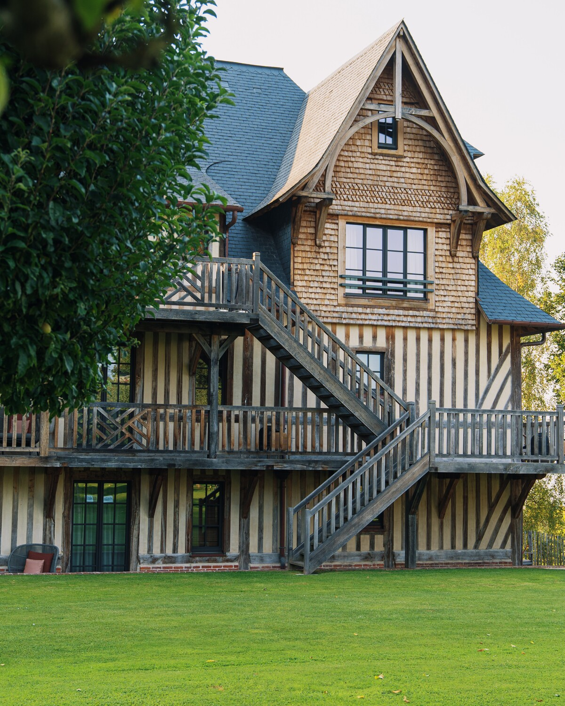
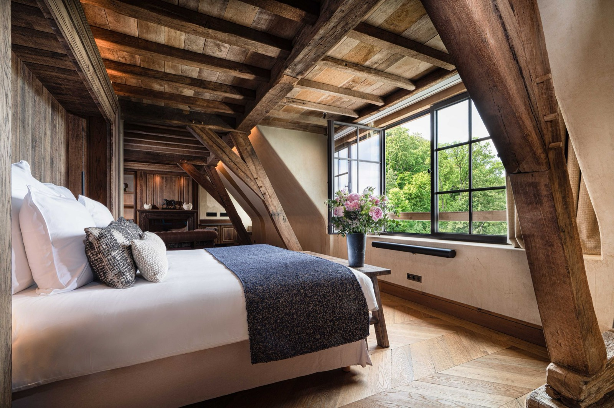
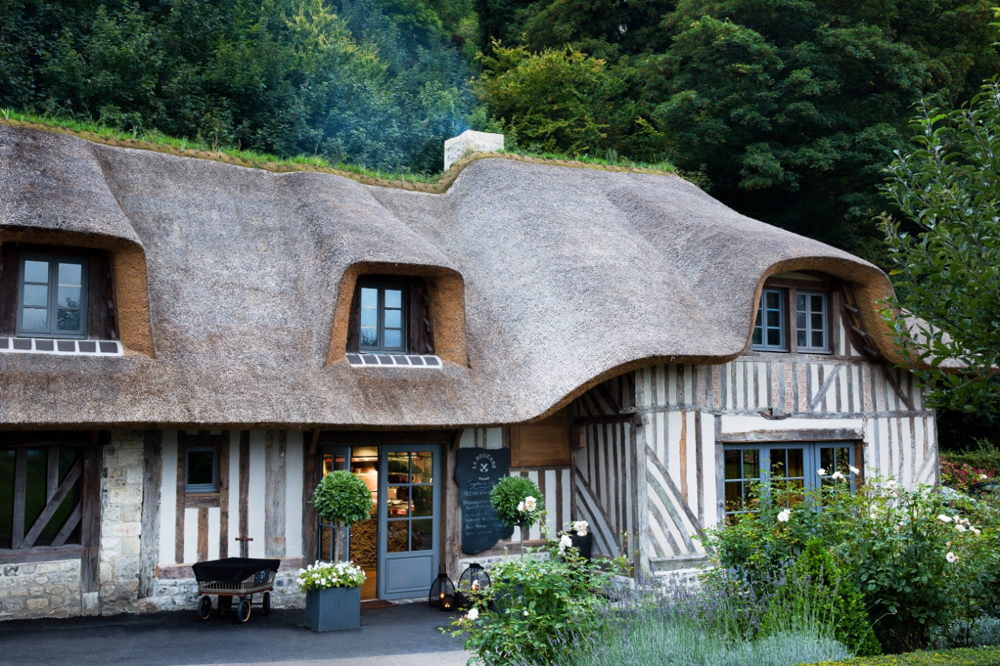

Ferme Saint-Siméon, avis : l'auberge où l'impressionnisme a commencé
Monet y a passé une année entière. Deux siècles après la mère Toutain, la ferme-auberge des hauteurs de Honfleur est un Relais & Châteaux de trente-cinq clés, dont vingt possèdent leur propre hammam. C'est la seule maison de notre palmarès normand à obtenir l'Indice Héritage Normand maximal.

La Ferme Saint-Siméon vue du ciel, sur les hauteurs de Honfleur, au-dessus de l'estuaire de la Seine. Photo : La Ferme Saint-Siméon, site officiel.
TL;DR : l'essentielScore LMHS 9,0/10, Indice Héritage Normand 5/5
- L'histoire. Maison privée en 1631, ferme-auberge en 1825 sous la famille Toutain, elle voit passer Boudin, Corot, Courbet, Jongkind, Pissarro et Claude Monet, qui y reste une année entière. C'est là que naît l'École de Saint-Siméon.
- La maison. Relais & Châteaux depuis 1964, 35 chambres et suites en six catégories, dont 20 avec hammam privatif, plus un Spa Potager et deux restaurants.
- La note. 9,0/10, reprise à l'identique de notre palmarès des hôtels de charme de Normandie, où la maison est deuxième, et Indice Héritage Normand 5/5, le seul maximum de ce palmarès.
Ce que cet avis ne fait pas : nous n'avons pas dormi sur place. C'est un avis documentaire, établi sur le site officiel de l'établissement, ses distinctions et la presse, et il le dit. Ce n'est pas non plus une thalasso : la maison n'a ni eau de mer ni cure marine, raison pour laquelle elle ne figure pas dans notre palmarès des thalassos normandes.
1825 : une ferme-auberge devient le laboratoire de l'impressionnisme

Colombages et toit de chaume : le bâtiment que les peintres ont connu. Photo : La Ferme Saint-Siméon, site officiel.
Le bâtiment date de 1631 et n'était alors qu'une maison d'habitation. Tout se joue en 1825, quand la famille Toutain en fait une ferme-auberge. La table est simple, la cidrerie fonctionne, et surtout la terrasse domine l'estuaire de la Seine : c'est exactement ce que cherchaient des peintres qui commençaient à sortir des ateliers pour travailler dehors.
Eugène Boudin, Camille Corot, Gustave Courbet, Johan Barthold Jongkind, Camille Pissarro s'y retrouvent, et Claude Monet y séjourne une année entière. Ce que l'on a appelé après coup l'École de Saint-Siméon s'invente sur cette hauteur, dans les années qui précèdent le mot « impressionnisme » lui-même. La particularité du lieu, et elle est rare, c'est que le motif est encore là : l'estuaire, les vergers, la lumière qui change toutes les heures. On ne visite pas un souvenir, on regarde ce qu'ils regardaient.
La suite est plus institutionnelle et non moins remarquable. La maison entre chez Relais & Châteaux en 1964, ce qui en fait l'une des plus anciennes adhésions françaises de l'association. Elle crée la Collection Saint-Siméon en 2019, qui réunit plusieurs adresses honfleuraises dont l'Hôtel Saint-Delis, et elle a fêté en 2025 le bicentenaire de la ferme-auberge, avec un programme de résidences d'artistes.
Trente-cinq clés, et vingt hammams privatifs

Une suite avec douche hammam et baignoire balnéo. Photo : La Ferme Saint-Siméon, site officiel.
La maison compte 35 chambres et suites, réparties en six catégories : Classique, Supérieure, Deluxe, Junior Suite, Suite et Suite Ciels de Seine. Poutres, boiseries, tissus lourds et cheminées : le registre est celui d'une demeure de campagne, pas d'un hôtel de chaîne, et c'est ce qui explique l'Indice Héritage Normand maximal.
Le fait qui distingue vraiment cette maison est chiffrable : vingt des trente-cinq clés disposent d'un hammam privatif. Pas un hammam commun réservable, pas un créneau à négocier à la réception : une douche vapeur dans la salle de bains, disponible à toute heure. Sur un séjour de deux nuits, cela change plus l'expérience qu'une carte de soins.
Le Spa Potager, et un soin signature à 170 €
Le Spa Potager est installé dans les jardins de la propriété, dans un ancien atelier d'artiste, et il est privatisable. La maison nous en a précisé la composition le 21 août 2026 : un sauna avec vue sur l'estuaire, un hammam et un bain à remous extérieur, en collaboration avec Maison Caulières. Les soins et massages sont quant à eux signés Olivier Claire. Le soin signature annoncé par la maison est les « Perles de Fraîcheur », une heure pour 170 €, orienté circulation et drainage. C'est un spa de maison, pas un centre de bien-être : on n'y vient pas pour un parcours de deux heures, mais pour un moment isolé dans un jardin. Et il faut le dire clairement, parce que la confusion est fréquente et que le propre dossier de presse de la maison, daté de 2020, l'entretient encore : il n'y a pas de piscine à la Ferme Saint-Siméon.
Deux tables, dont la chaumière peinte par Monet

La Boucane, dans la chaumière. Photo : La Ferme Saint-Siméon, site officiel.
Les Impressionnistes est la table gastronomique, dirigée par le chef Matthieu Pouleur, distingué « Grand de Demain » par Gault & Millau. Sa proposition s'appelle « Nuances » et se décline en quatre, six ou huit services, sur les produits normands et les pêches de la Manche. La salle ouvre sur les jardins et l'estuaire.
La Boucane est le bistrot, et son adresse vaut à elle seule le détour : il occupe la chaumière que Monet a peinte. Registre plus simple, produits régionaux, ambiance d'auberge. Deux tables suffisent à couvrir deux soirs sans répétition, ce qui n'est pas si courant dans une maison de trente-cinq clés.
Notre note, et où elle place la maison
Cette page ne crée aucune note nouvelle. La Ferme Saint-Siméon est déjà classée dans notre palmarès des hôtels de charme de Normandie, à la grille LMHS Destination, et nous reprenons ce chiffre à l'identique : 9,0/10. Une même adresse ne porte jamais deux notes différentes sur ce site.
| Rang normand | Maison | Où | Score LMHS | Héritage Normand |
|---|---|---|---|---|
| 01 | Château La Chenevière | Commes, Calvados | 9,2/10 | 4,8/5 |
| 02 | La Ferme Saint-Siméon | Honfleur | 9,0/10 | 5,0/5 |
| 03 | Château d'Audrieu | Audrieu, Calvados | 8,8/10 | 4,5/5 |
Extrait de notre palmarès des dix hôtels de charme de Normandie, publié le 4 août 2026. Notes reprises sans recalcul.
La maison est donc deuxième de Normandie sur la note globale, et première sur le patrimoine. C'est le résultat le plus intéressant de cette fiche : elle est la seule des dix à obtenir l'Indice Héritage Normand maximal, 5/5, devant le Château de Bonnemare et ses 4,9/5. Autrement dit, si votre critère est ce qu'une maison garde réellement de la Normandie et de son histoire, aucune adresse de la région ne fait mieux. Si votre critère est l'ensemble de la prestation, La Chenevière passe devant d'un dixième.
Le bémol LMHS : ce n'est pas une adresse de bord de mer, malgré ce qu'on lit souvent. La Ferme Saint-Siméon domine l'estuaire de la Seine, ce qui n'est pas la mer, et il faut descendre à Honfleur puis rouler pour trouver une plage. Le Spa Potager est par ailleurs un spa de maison, sans parcours ni bassin : les quinze clés sans hammam privatif n'ont donc pas d'équipement de bien-être en propre. Enfin, le tarif d'appel affiché sur le site officiel se situe autour de 620 €, ce qui place la maison au-dessus de toutes les autres de notre palmarès normand.Le mot d'EmmanuelLe seul hôtel de France où le motif est resté à sa place
Des hôtels qui se réclament d'un peintre, il y en a partout, et la plupart se contentent d'accrocher des reproductions dans le couloir. Ici, ce n'est pas le décor qui est impressionniste, c'est le point de vue. Boudin, Corot, Jongkind et Monet sont venus sur cette hauteur pour une raison précise et technique : l'estuaire y renvoie une lumière qui change toutes les heures, et c'était le sujet même de ce qu'ils cherchaient à peindre. Deux siècles plus tard, l'estuaire est toujours là et la lumière n'a pas changé de méthode. C'est ce qui explique le seul 5/5 de notre Indice Héritage Normand : la maison n'a pas eu à reconstituer son histoire, elle a juste eu à ne pas la démolir. Et l'idée la plus juste qu'elle ait eue, c'est d'avoir mis son bistrot dans la chaumière que Monet a peinte plutôt que d'en faire un musée.
Emmanuel Laveran, rédacteur hôtels et gastronomie
Infos pratiques et accès
- Adresse : 20 rue Adolphe Marais, 14600 Honfleur, Calvados
- Téléphone : +33 (0)2 31 81 78 00
- Classement : 5 étoiles, membre de Relais & Châteaux depuis 1964
- Capacité : 35 chambres et suites, six catégories, dont 20 avec hammam privatif
- Bien-être : Spa Potager privatisable, sauna avec vue sur l'estuaire, hammam et bain à remous extérieur, en collaboration avec Maison Caulières. Soins et massages Olivier Claire, soin signature « Perles de Fraîcheur », une heure, 170 €. Pas de piscine
- Restauration : Les Impressionnistes, gastronomique, chef Matthieu Pouleur, menu « Nuances » en 4, 6 ou 8 services ; La Boucane, bistrot, dans la chaumière
- Distinctions : deux Clés MICHELIN, La Liste Top 1000 Hotels 2026, Gault & Millau
Honfleur est à environ deux heures de Paris par l'A13, et le Vieux-Bassin se rejoint à pied depuis la maison, en descendant. Autour, la Côte Fleurie donne de vraies raisons de rester : Deauville et Trouville à un quart d'heure, le pont de Normandie en vue depuis les hauteurs, et les plages du Débarquement à moins d'une heure vers l'ouest.
Ce que coûte une nuit, et ce que nous n'avons pas vérifié
Le moteur de réservation du site officiel affichait, au 13 août 2026, un tarif de l'ordre de 620 € pour la période consultée. Nous le publions comme un ordre de grandeur, pas comme un prix ferme : la maison ne publie pas de grille par catégorie, et l'écart entre une Classique en semaine hors saison et une Suite Ciels de Seine un samedi d'août est considérable. Le chiffre de 489 € qui circule dans plusieurs reprises ne correspond à aucune donnée que nous ayons pu retrouver à cette date.
Deux questions valent d'être posées à la réservation : quelles catégories exactement disposent du hammam privatif, puisque vingt clés sur trente-cinq seulement en sont équipées, et ce que couvre l'accès au Spa Potager selon la formule, l'espace étant privatisable.
FAQ : La Ferme Saint-Siméon
Quelle note LMHS La Ferme Saint-Siméon obtient-elle ?
9,0/10 à la grille LMHS Destination, note reprise à l'identique de notre palmarès des hôtels de charme de Normandie, où la maison occupe la deuxième place, derrière le Château La Chenevière (9,2/10). Elle est en revanche première sur l'Indice Héritage Normand, avec 5/5, le seul maximum de ce palmarès de dix maisons.
Quel est le lien entre La Ferme Saint-Siméon et les impressionnistes ?
La maison, bâtie en 1631, devient ferme-auberge en 1825 sous la famille Toutain. Sa terrasse domine l'estuaire de la Seine, et c'est précisément ce que cherchaient les peintres qui commençaient à travailler en plein air. Boudin, Corot, Courbet, Jongkind et Pissarro s'y retrouvent, et Claude Monet y séjourne une année entière. On a appelé après coup ce groupe l'École de Saint-Siméon. Le motif est toujours visible depuis les fenêtres.
Combien de chambres ont un hammam privatif ?
Vingt sur trente-cinq. C'est le vrai signe distinctif de la maison : une douche vapeur dans la salle de bains, accessible à toute heure, sans créneau à réserver. Les quinze autres clés n'en disposent pas, ce qui rend la question de la catégorie décisive au moment de réserver. Les six catégories sont Classique, Supérieure, Deluxe, Junior Suite, Suite et Suite Ciels de Seine.
Qui est le chef du restaurant Les Impressionnistes ?
Matthieu Pouleur, distingué « Grand de Demain » par Gault & Millau. Sa proposition s'appelle « Nuances » et se décline en quatre, six ou huit services. La maison exploite un second restaurant, La Boucane, bistrot installé dans la chaumière peinte par Monet.
La Ferme Saint-Siméon est-elle une thalasso ?
Non, et c'est une confusion fréquente. La maison possède un Spa Potager privatisable, installé dans un ancien atelier d'artiste au milieu des jardins, qui réunit un sauna avec vue sur l'estuaire, un hammam et un bain à remous extérieur, en collaboration avec Maison Caulières, avec des soins signés Olivier Claire. Mais ni eau de mer, ni bassin marin, ni cure, et pas de piscine. C'est la raison pour laquelle elle ne figure pas dans notre palmarès des thalassos de Normandie, où seuls des centres pratiquant réellement la cure marine sont classés.
Depuis quand la maison est-elle Relais & Châteaux ?
Depuis 1964, ce qui en fait l'une des plus anciennes adhésions françaises de l'association, fondée dix ans plus tôt. Elle a créé la Collection Saint-Siméon en 2019, qui réunit plusieurs adresses honfleuraises dont l'Hôtel Saint-Delis, et fêté en 2025 le bicentenaire de la ferme-auberge. Elle porte par ailleurs deux Clés MICHELIN et figure à La Liste Top 1000 Hotels 2026.
Quel est le tarif d'une nuit à La Ferme Saint-Siméon ?
Le moteur du site officiel affichait, au 13 août 2026, un tarif de l'ordre de 620 € pour la période consultée. La maison ne publie pas de grille par catégorie, et l'écart entre une chambre Classique hors saison et une Suite Ciels de Seine en août est considérable. Nous publions donc un ordre de grandeur, et non un prix ferme.
Peut-on dîner ou aller au spa sans être client de l'hôtel ?
Les deux restaurants, Les Impressionnistes et La Boucane, accueillent la clientèle extérieure sur réservation. Pour le Spa Potager, qui est privatisable et de taille modeste, il faut poser la question directement à la maison : les conditions d'accès des non-résidents ne sont pas publiées, et nous ne les avons pas vérifiées.
Méthode et sources
Avis établi sans note nouvelle : le 9,0/10 et l'Indice Héritage Normand de 5/5 sont repris à l'identique de notre palmarès des dix hôtels de charme de Normandie, publié le 4 août 2026 à la grille LMHS Destination, qui s'applique sur données publiques. Aucun séjour de contrôle n'a été effectué, et nous ne prétendons pas le contraire : ni nuit sur place, ni repas, ni soin. Capacité, catégories, nombre de hammams privatifs, nom du spa et de son soin signature, restaurants, chef, distinctions, adresse et téléphone ont été relevés le 13 août 2026 sur le site officiel de l'établissement et recoupés avec Relais & Châteaux et Gault & Millau. Le tarif est donné comme un ordre de grandeur, relevé à la même date sur le moteur de réservation officiel, et signalé comme tel. Photographies : site officiel de La Ferme Saint-Siméon. Aucun partenariat commercial, aucune affiliation, aucun séjour offert.
Sources utiles
- La Ferme Saint-Siméon, site officiel
- Les Impressionnistes, la table gastronomique
- Relais & Châteaux, fiche du restaurant
- Gault & Millau, Les Impressionnistes
Pour aller plus loin
- Hôtels de charme en Normandie : 10 maisons classées, d'où cette note est reprise
- Meilleurs hôtels de luxe en Normandie : les 8 adresses 5 étoiles, où la maison est deuxième
- Thalasso en Normandie : 10 adresses classées, et pourquoi cette maison n'y figure pas
- Château du Portereau, Vertou, un autre avis documentaire du grand Ouest
- Château Saint-Jean, Montluçon, un monument reconverti au même exercice
- Les 50 meilleurs hôtels & spas de France 2026, le palmarès national
- Notre méthode, les grilles de notation et le catalogue des indices